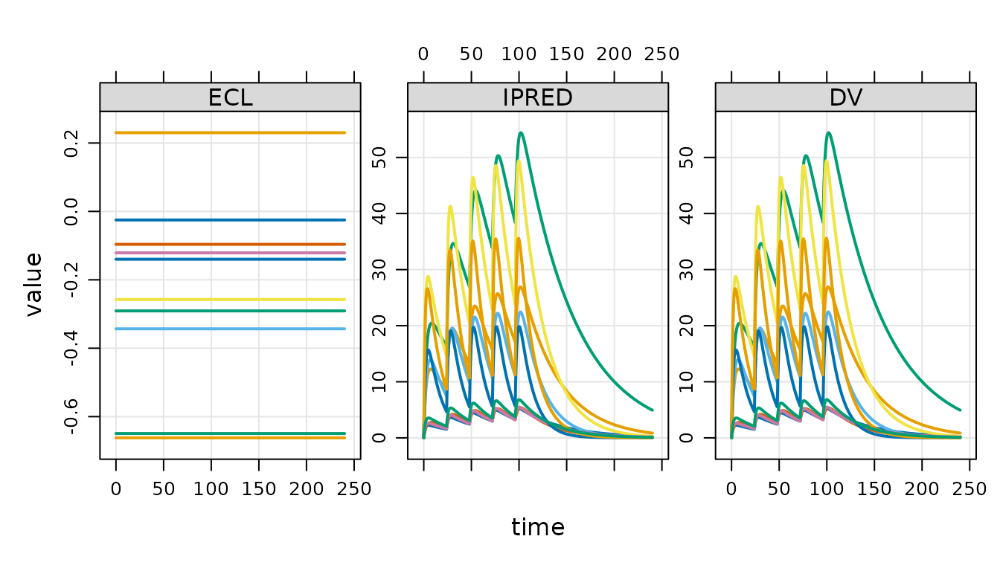

Load the model
Load a model using mread_ds() or other friends.
mod <- mread_ds("popex-2.mod", outvars = "IPRED, DV, ECL")This model is almost identical to the same model loaded with
mread(); there is just some extra information included to
make sure it works well with the mrgsim.ds approach.
Simulate
To simulate, call mrgsim_ds()
data <- evd_expand(amt = c(100, 300, 700), ii = 24, addl = 4, ID = 1:10)
set.seed(98)
out <- mrgsim_ds(mod, data = data)The output handles very similar to regular mrgsim()
output
out## Model: popex-2_mod
## Dim : 14,460 x 5
## Files: 1 [295 Kb]
## Owner: yes
## ID TIME ECL IPRED DV
## 1: 1 0.0 -0.1397334 0.0000000 0.0000000
## 2: 1 0.0 -0.1397334 0.0000000 0.0000000
## 3: 1 0.5 -0.1397334 0.7493918 0.7493918
## 4: 1 1.0 -0.1397334 1.2650920 1.2650920
## 5: 1 1.5 -0.1397334 1.6175329 1.6175329
## 6: 1 2.0 -0.1397334 1.8559447 1.8559447
## 7: 1 2.5 -0.1397334 2.0147377 2.0147377
## 8: 1 3.0 -0.1397334 2.1179631 2.1179631
head(out)## # A tibble: 6 × 5
## ID TIME ECL IPRED DV
## <dbl> <dbl> <dbl> <dbl> <dbl>
## 1 1 0 -0.140 0 0
## 2 1 0 -0.140 0 0
## 3 1 0.5 -0.140 0.749 0.749
## 4 1 1 -0.140 1.27 1.27
## 5 1 1.5 -0.140 1.62 1.62
## 6 1 2 -0.140 1.86 1.86
dim(out)## [1] 14460 5
plot(out, nid = 10)
Simulation files
Simulation files are always initially stored in
tempdir()
out1 <- mrgsim_ds(mod, data)
out2 <- mrgsim_ds(mod, data, id = "regimens")
out3 <- mrgsim_ds(mod, data = filter(data, AMT==300))
list_temp()## 4 files [984.8 Kb]
## - mrgsims-ds-1df53f035ac.parquet
## - mrgsims-ds-1df5460536c1.parquet
## - mrgsims-ds-1df572cfa73.parquet
## - mrgsims-ds-regimens.parquetTo save outputs to a persistent location, use
write_ds().
This re-writes all the data into a single parquet file. This can take some time for very large outputs across multiple files.
An alternative is to rename and move.